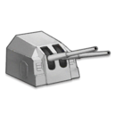
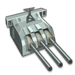

Standard Guns
- 
- Slang Term: Tbtsk
- Proper Name: Twin 150mm (TbtsK C/36)
- Origin of the Name: It's got “tbtsk” in the name of the gun itself.
- Description: The best armor-piercing, non-priority light cruiser gun.
- 
- Slang Term: Belgun
- Proper Name: Triple 155mm (3rd Year Type)
- Origin of the Name: It's used in-game on HMS Belfast.
- Descripton: The best high-explosive light cruiser gun.

- Slang Term: Eugen Gun
- Proper Name: Twin 203mm (SK C/34)
- Origin of the Name: It's used in real life on KMS Prinz Eugen.
- Descripton: A good armor-piercing heavy cruiser gun.
- Slang Term: French Gun, 138.6
- Proper Name: Single 138.6mm (Mle 1929)
- Origin of the Name: It came from the French ship event, Iris of Light and Dark.
- Descripton: The best destroyer gun for gun-based DPS.
Priority Guns
- Slang Term: Nepgun
- Proper Name: Triple 152mm (BL 6" Mk XXV Prototype)
- Origin of the Name: It's used in-game on HMS Neptune.
- Descripton: The best armor-piercing light cruiser gun.
- Slang Term: Sanrui Gun, Saint Louis Gun, Triple 203 MLE
- Proper Name: Triple 203mm (Mle 1934 Prototype)
- Origin of the Name: It's used in-game on FNFF Saint Louis, who is also known as Sanrui.
- Descripton: The best high-explosive heavy cruiser gun.
- Slang Term: Roon Gun, Triple 203 SKC
- Proper Name: Triple 203mm (SK C/34 Prototype)
- Origin of the Name: It's used in-game on KMS Roon.
- Descripton: The best armor-piercing heavy cruiser gun.